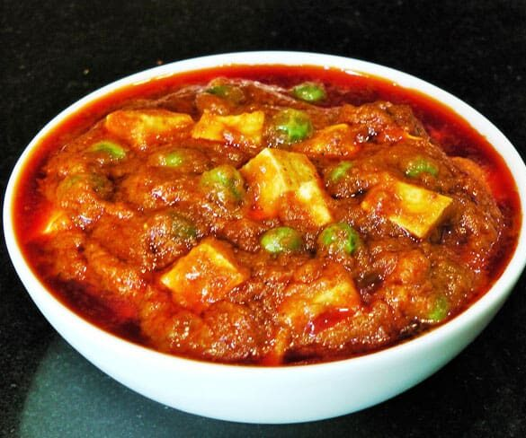

Matar Paneer

Description
Matar paneer is a spicy vegetarian north Indian and Punjabi dish. It is also known as muttar paneer. The main ingredients of this dish are peas, paneer, tomato sauce, and garam masala.
It is generally served with rice, paratha, roti, or puri.
Ingredients
- 2 tablespoons vegetable oil
- 2 cups paneer cheese, cut into 1/2-inch cubes
- 5 onions, diced
- 1 tablespoon cumin
- 2 tablespoons ground coriander
- 5 tomatoes, diced
- 2 tablespoons freshly grated ginger
- 1 tablespoon garlic paste
- 2 teaspoons red pepper flakes
- 2 teaspoons ground turmeric
- 2 teaspoons chili powder
- 2 teaspoons garam masala
- 1 cup water
- 2 cups peas, defrosted
- salt to taste
Steps
- Heat 1 tablespoon oil in a large skillet and pan-fry paneer cheese until slightly browned, about 5 minutes.
- Heat 1 tablespoon oil over medium heat and cook onion until soft and translucent, about 5 minutes.
- Add cumin and coriander; stir-fry for 1 minute. Add tomatoes, ginger, garlic paste, red pepper flakes, turmeric, chili powder, and garam masala. Bring to a simmer and cook for about 10 minutes. Remove from heat and let cool slightly.
- Carefully pour about 3/4 of the mixture into a blender. Cover the top of the blender with a kitchen towel and blend until smooth. Pour back into the skillet.
- Add water, peas, and paneer. Cover, bring to a boil, reduce heat, and simmer until flavors are well combined, about 10 minutes.
Back to Home